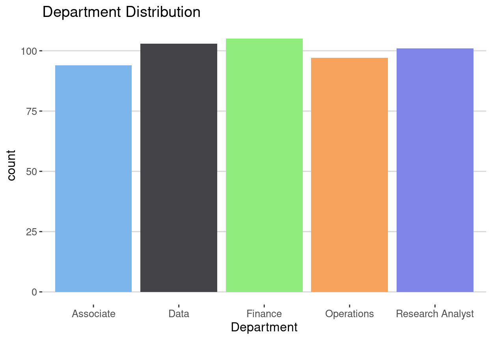
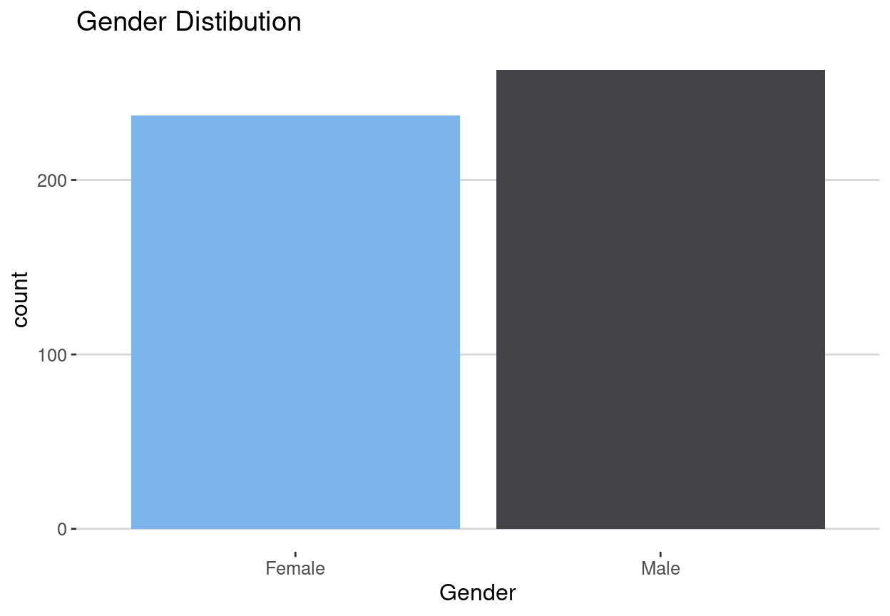
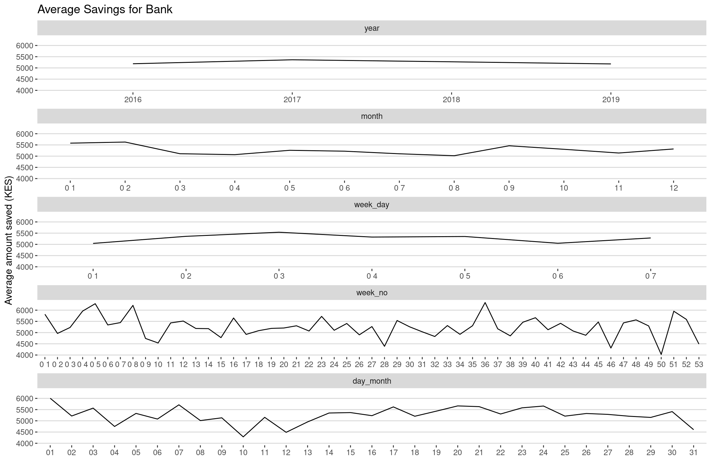
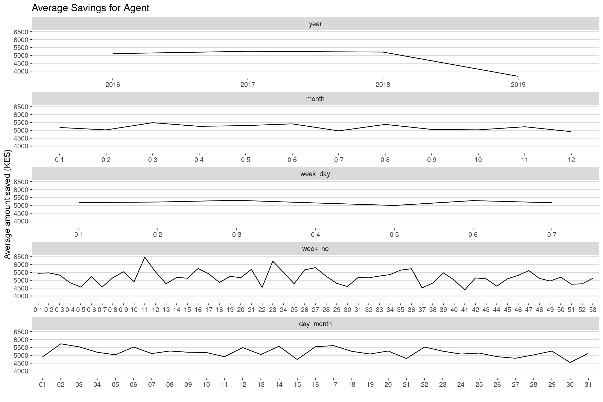
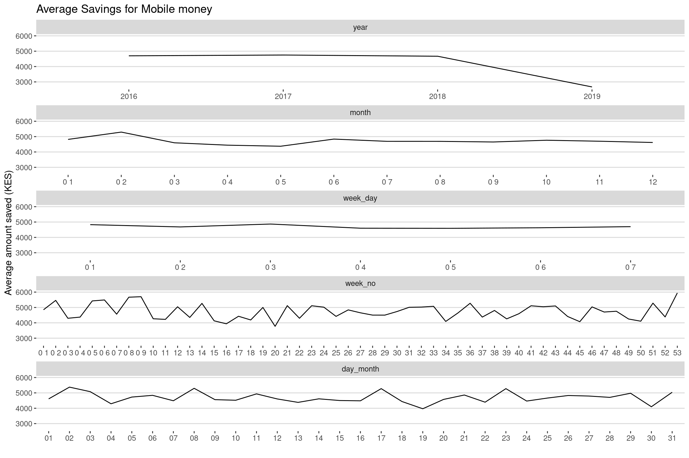
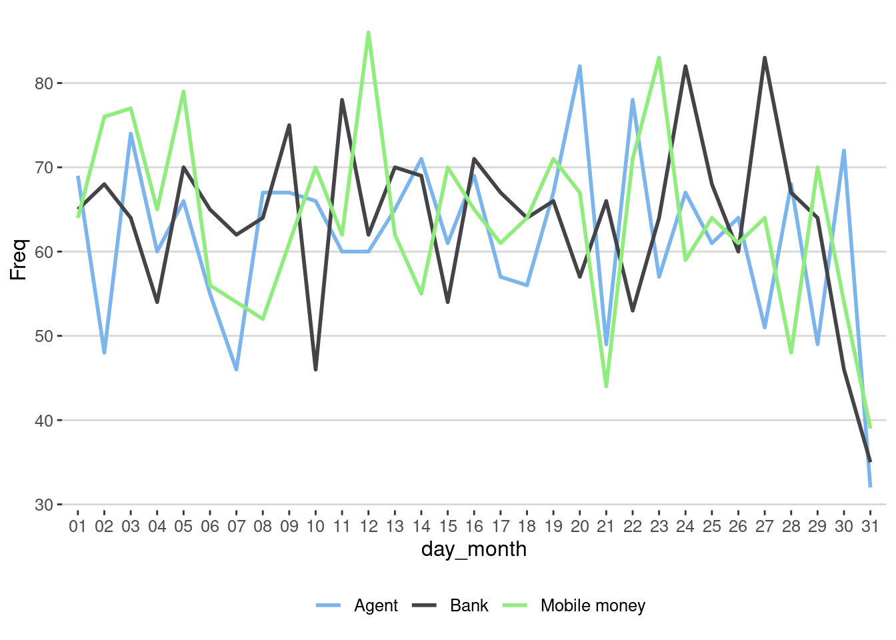
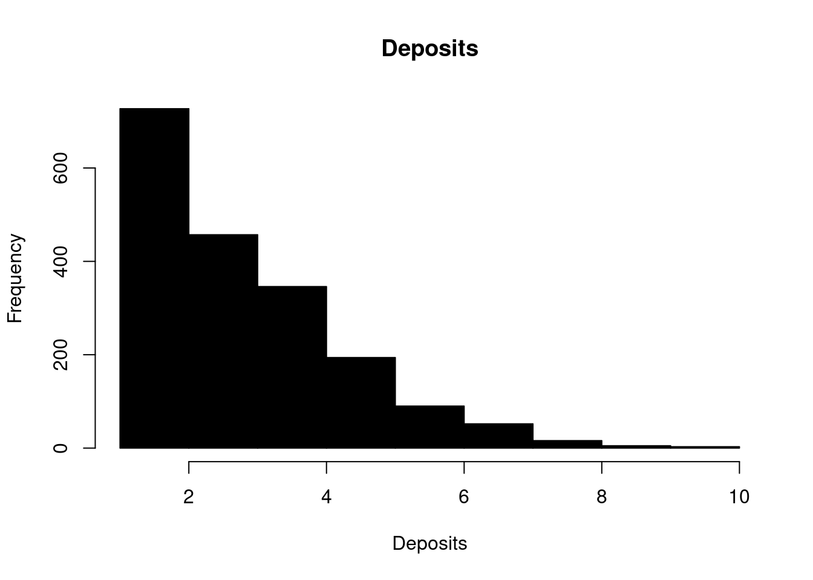
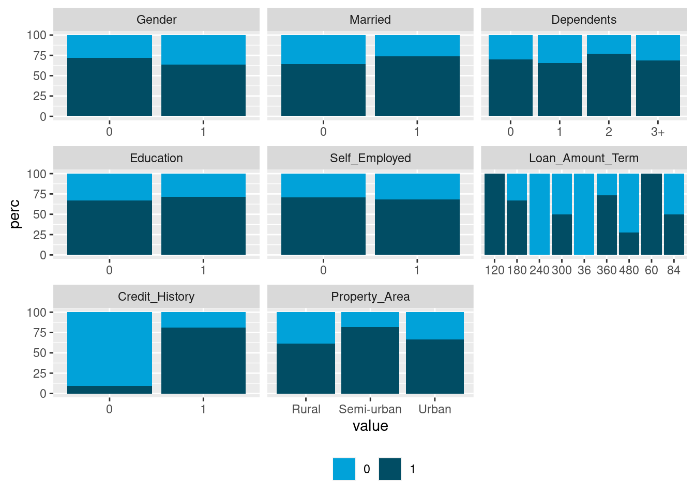
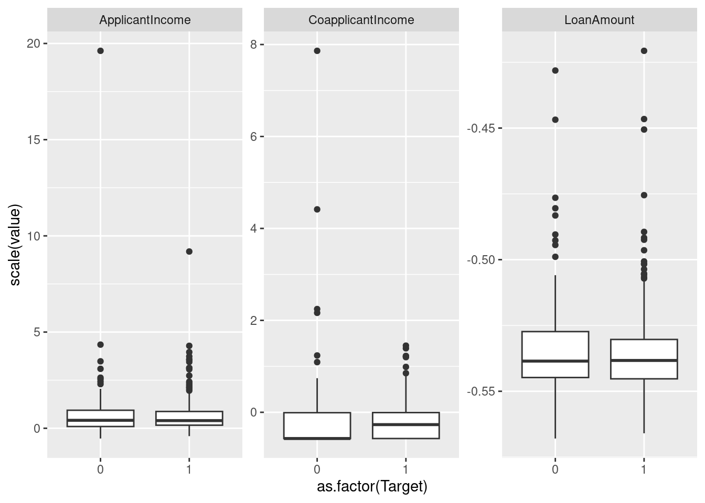
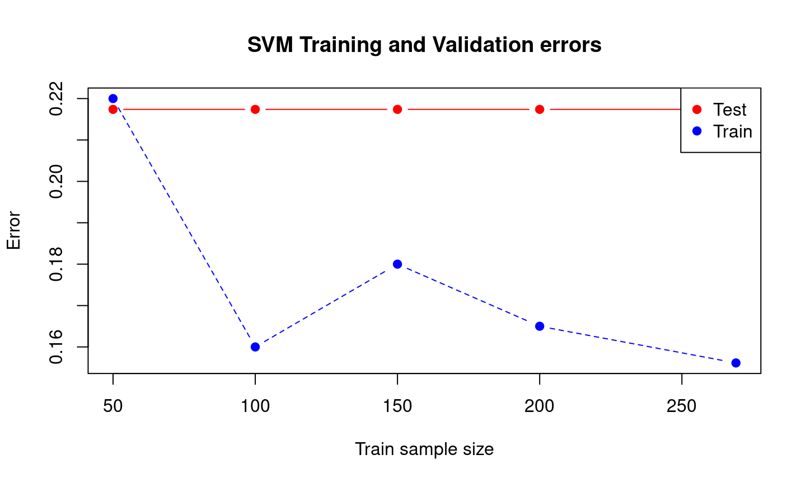

library(tidyverse)
library(readxl)
library(data.table)
library(knitr)
library(ggthemes)
#library(kableExtra)- I was not sure if the presentation is about insights from the data or how I solved the problem.
- I decided to to combine both with R presentation.
Task 1
Understanding the demographics of company xyz.
Atleast half are youth average age = 33.5
Atleast half earn 5557
xyz <- setDT(read_csv("XYZ.csv"))
xyz_sub <- xyz[, .(Gender, Age, Income)]
xyz_subm <- melt(xyz_sub, id.vars = "Gender")Summary Statistics Age and Income
xyz_subm %>% group_by(variable) %>%
summarise(Average = mean(value), Median = median(value),
Min = min(value), Max = max(value)) %>%
kable() #%>% kable_styling() %>%| variable | Average | Median | Min | Max |
|---|---|---|---|---|
| Age | 33.506 | 33 | 18 | 50 |
| Income | 5498.844 | 5557 | 1000 | 9897 |
#scroll_box(width = "100%", height = "30%")% gender Gap
- Male/Female % al most equal
- There are 5.2% more men than women
gender <- xyz %>% group_by(Gender) %>%
summarise(freq = n()) %>%
mutate(Perc = round(freq/sum(freq) * 100, 2))
gender %>% kable() #%>% kable_styling() %>%| Gender | freq | Perc |
|---|---|---|
| Female | 237 | 47.4 |
| Male | 263 | 52.6 |
#scroll_box(width = "100%", height = "30%")% gender Gap
gender[, -2] %>% spread(Gender, Perc) %>%
mutate(Percentage_Gender_Gap = Male - Female) %>%
kable() #%>% kable_styling() %>%| Female | Male | Percentage_Gender_Gap |
|---|---|---|
| 47.4 | 52.6 | 5.2 |
#scroll_box(width = "100%", height = "30%")#Single Ladies Nyeri
- 12(2.4% of the company employees) single ladies from Nyeri county
single_nyeri <- xyz[Gender == "Female" & Marital_Status == "Single" & County == "Nyeri",]
nrow(xyz)[1] 500cat("The Number of single ladies in Nyeri is ", nrow(single_nyeri))The Number of single ladies in Nyeri is 12Summary Statistics Single Ladies Nyeri
- Average age 36 and medium income is about $50
single_nyeri %>%
summarise(Average_Age = mean(Age), Median_Income = median(Income)) %>%
kable() #%>% kable_styling() %>%| Average_Age | Median_Income |
|---|---|
| 36 | 5557 |
#scroll_box(width = "100%", height = "30%")Number of Juniors
- 28 juniors
juniors_26 <-xyz[!grepl("Operartions|Data",Department) & xyz$Age < 26 & grepl("Junior", Role),]
cat("The Number of juniors ", nrow(juniors_26))The Number of juniors 28juniors_26 %>% group_by(Department) %>%
summarise(freq = n()) %>%
mutate(Perc = round(freq/sum(freq) * 100, 2)) %>%
kable() #%>% kable_styling() %>%| Department | freq | Perc |
|---|---|---|
| Associate | 5 | 17.86 |
| Finance | 11 | 39.29 |
| Operations | 8 | 28.57 |
| Research Analyst | 4 | 14.29 |
#scroll_box(width = "100%", height = "40%")Difference in mean income between male and female
- The Operations has the biggest difference in mean income
- Female/Males average earnings in different departments
income_gender <- xyz %>% group_by(Gender, Department) %>%
summarise(Average = mean(Income))
income_gender_dcast <- dcast(Department ~ Gender, data = income_gender)
income_gender_dcast %>% mutate( Difference = Male - Female) %>%
kable()#%>% kable_styling() %>%| Department | Female | Male | Difference |
|---|---|---|---|
| Associate | 5345.047 | 5071.941 | -273.1053 |
| Data | 5613.420 | 5270.396 | -343.0238 |
| Finance | 5574.714 | 5936.750 | 362.0357 |
| Operations | 5043.286 | 6284.854 | 1241.5685 |
| Research Analyst | 5264.522 | 5533.327 | 268.8055 |
#scroll_box(width = "100%", height = "45%")Function to plot categorical variables
bar_plot <- function(data, title,...) {
#load ggplot2
#function takes a data frame
#and other arguments that ggplot
#function from ggplot2 takes
# the other arguments are aesthetic mappings
require(ggplot2)
ggplot(data) + geom_bar(aes(...))+
ggtitle(title)+
ggthemes::theme_hc()+
ggthemes::scale_fill_hc()+
theme(legend.position = "none")
}Function to plot categorical variables test 1
bar_plot(xyz, Department, title = "Department Distribution", fill = Department)
Function to plot categorical variables test 2
bar_plot(xyz, Gender, title = "Gender Distibution", fill = Gender)
Task 2
Read Files
- Read files using the patterns
my_files <- dir(path = "Education",pattern = "^Chi|^Sch|^Persi|Secon|^Progr|Pri")
my_files <- paste0("Education/", my_files)
library(readxl)
list_files <- list()
for (i in 1:length(my_files)) {
x = read_excel(my_files[i])
id = grep("Country Name", x$`Data Source`)
nms <- x[id,]
names(x) <- nms %>% as.character()
list_files[[i]] <- x[-c(1:id),]
cat("...")
}......................................................Combine Files
- Since files are stored in a list combine them
df_world <- rbindlist(list_files) %>% setDT()
df_world_melt <- melt(df_world, id.vars = names(df_world)[1:4])
nms2 <- Hmisc::Cs(Country_Name, Country_Code,
Indicator_Name, Indicator_Code, Year, Indicator_value)
names(df_world_melt) <- nms2
df_world_melt[, Year := as.numeric(as.character(df_world_melt$Year))]Head output data frame
head(df_world_melt) %>% kable() #%>% | Country_Name | Country_Code | Indicator_Name | Indicator_Code | Year | Indicator_value |
|---|---|---|---|---|---|
| Aruba | ABW | Children out of school, primary, female | SE.PRM.UNER.FE | 1960 | NA |
| Afghanistan | AFG | Children out of school, primary, female | SE.PRM.UNER.FE | 1960 | NA |
| Angola | AGO | Children out of school, primary, female | SE.PRM.UNER.FE | 1960 | NA |
| Albania | ALB | Children out of school, primary, female | SE.PRM.UNER.FE | 1960 | NA |
| Andorra | AND | Children out of school, primary, female | SE.PRM.UNER.FE | 1960 | NA |
| Arab World | ARB | Children out of school, primary, female | SE.PRM.UNER.FE | 1960 | NA |
#kable_styling() %>%
#scroll_box(width = "100%", height = "30%")Head output kenya data
kenya_2011 <- df_world_melt[Country_Name == "Kenya" & Year >= 2011]
head(kenya_2011) #%>% kable() %>% Country_Name Country_Code
1: Kenya KEN
2: Kenya KEN
3: Kenya KEN
4: Kenya KEN
5: Kenya KEN
6: Kenya KEN
Indicator_Name Indicator_Code
1: Children out of school, primary, female SE.PRM.UNER.FE
2: Persistence to last grade of primary, female (% of cohort) SE.PRM.PRSL.FE.ZS
3: Persistence to last grade of primary, male (% of cohort) SE.PRM.PRSL.MA.ZS
4: Primary completion rate, female (% of relevant age group) SE.PRM.CMPT.FE.ZS
5: Primary completion rate, male (% of relevant age group) SE.PRM.CMPT.MA.ZS
6: Progression to secondary school, female (%) SE.SEC.PROG.FE.ZS
Year Indicator_value
1: 2011 <NA>
2: 2011 <NA>
3: 2011 <NA>
4: 2011 <NA>
5: 2011 <NA>
6: 2011 <NA> #kable_styling() %>%
#scroll_box(width = "100%", height = "70%")Head output kenya data and saving files
write.csv(head(kenya_2011, 15), file = "kenya data.csv", row.names = F)
kenya_2011_na <- kenya_2011[!is.na(kenya_2011$Indicator_value),]
write.csv(head(kenya_2011_na, 15), file = "kenya data without na.csv", row.names = F)
head(kenya_2011_na) %>% kable() #%>%| Country_Name | Country_Code | Indicator_Name | Indicator_Code | Year | Indicator_value |
|---|---|---|---|---|---|
| Kenya | KEN | Children out of school, primary, female | SE.PRM.UNER.FE | 2012 | 537736 |
| Kenya | KEN | School enrollment, primary (gross), gender parity index (GPI) | SE.ENR.PRIM.FM.ZS | 2012 | 1.0080599784851101 |
| Kenya | KEN | School enrollment, primary, female (% gross) | SE.PRM.ENRR.FE | 2012 | 112.41464233398401 |
| Kenya | KEN | School enrollment, primary, male (% gross) | SE.PRM.ENRR.MA | 2012 | 111.51609802246099 |
| Kenya | KEN | Primary completion rate, female (% of relevant age group) | SE.PRM.CMPT.FE.ZS | 2014 | 100.183967590332 |
| Kenya | KEN | Primary completion rate, male (% of relevant age group) | SE.PRM.CMPT.MA.ZS | 2014 | 98.815101623535199 |
# kable_styling() %>%
#scroll_box(width = "100%", height = "70%")#Task 3
figari_sheet1 <- read_excel("Figari Bank.xlsx" ) %>% setDT()
figari_sheet2 <- read_excel("Figari Bank.xlsx", sheet = 2 ) %>% setDT()
figari_sheet2[, Dates := as.Date(Dates, origin = "1900-01-01")]
figari_sheet2[, year := year(Dates)]
figari_sheet2[, month := month(Dates)]
figari_sheet2[, month := ifelse(nchar(month) == 1 ,paste(0, month), month)]
figari_sheet2[, week_day := as.POSIXlt(Dates)$wday+1]
figari_sheet2[, week_day := ifelse(nchar(week_day) == 1 ,paste(0, week_day), week_day)]
figari_sheet2[, week_no := week(Dates)]
figari_sheet2[, week_no := ifelse(nchar(week_no) == 1 ,paste(0, week_no), week_no)]
figari_sheet2[, day_month := format(Dates, "%d")]
figari_sheet2_m <- melt(figari_sheet2[, c(3:9), with = F], id.vars = c("Amount", "Saving Mode"))Task 3 Plots
- Time series will enable us too see if there is seasonal/cyclic effects/trend
- week number after every two weeks, maybe end month
- Smoothing/decoposing often needed to see trend
figari_dat <- figari_sheet2_m %>% group_by(`Saving Mode`,variable, value) %>%
summarise(Average = mean(Amount))
titles <- levels(as.factor(figari_dat$`Saving Mode`))
titles <- paste("Average Savings for", titles)
figari_dat_split <- split(figari_dat, figari_dat$`Saving Mode`)
plots_figari <- list()
for ( i in 1:length(figari_dat_split)) {
this = figari_dat_split[[i]]
#write.csv(this, file = "this.csv", row.names = F)
plots_figari[[i]] <- ggplot(this, aes(value, Average)) +
facet_wrap(~variable, scales = "free_x", ncol = 1)+
geom_line(data = this, aes(value, Average, group = 1)) +
ggthemes::theme_hc()+
labs(x = "", y = "Average amount saved (KES)", title = titles[i])# +
#theme(axis.text.x = element_text(angle = 30, vjust = 1, hjust = 1))
}Average Amount saved at the Bank
- Year no visible trend/ few years
- first two months higher savings
- lowest between month 3 to month 8
- Save more from day 2 - day 4
- Week 1- 3 more savings drops to week 10
- more save less in around day 10 of the month
- decreasing trend trend from day 4 -10
plots_figari[[2]]
Average Amount saved at the Agent
- Save more from March to June
- Increasing trend from week 1 to 23 then decreasing
- Save less towards end of a month
plots_figari[[1]]
Average Amount saved Mobile money
- on average
- save less from month 3 to 6
- save less from week 9 to 22
plots_figari[[3]]
End Month Savings Favourite tool
- I’m thinking about the number of times someone saves. Average maybe skewed.
- Women prefer to save using agent
- In regions no Nyeri
names(figari_sheet2)[1] = names(figari_sheet1)[1]
figari_comb <- merge(figari_sheet2, figari_sheet1, by = "CustomerID")
end_month <- figari_comb %>%
group_by(day_month, `Saving Mode`) %>%
summarise(Freq = n()) %>%
mutate(perc = round(100 * Freq/sum(Freq), 2)) %>% ungroup()
#The number of times one deposits
ggplot(end_month, aes(day_month, Freq )) +
geom_line(aes(color =`Saving Mode`, group =`Saving Mode` ), size = 1)+
theme_hc()+
scale_color_hc(name = "") +
theme(legend.position = "bottom")
Histogram Deposits
- What you would expect.
deposits <- figari_sheet2[, .(freq = .N), by = CustomerID]
#approximmately poison
hist(deposits$freq, col = "black",
main = "Deposits",
xlab = "Deposits")
Subset People who have made one deposit
figari_deposits <- merge(deposits, figari_sheet1, by = "CustomerID")
figari_deposits_one <- figari_deposits[freq == 1] Demographic characteristics of those who have only made one deposit
Gender
figari_deposits_one %>% group_by(Gender) %>%
summarise(freq= n()) %>%
mutate(Perc =round(freq/sum(freq) *100, 2) ) %>%
kable()# %>%| Gender | freq | Perc |
|---|---|---|
| Female | 141 | 49.3 |
| Male | 145 | 50.7 |
#kable_styling() %>%
#scroll_box(width = "100%", height = "30%")Region
figari_deposits_one %>% group_by(Region) %>%
summarise(freq= n()) %>%
mutate(Perc =round(freq/sum(freq) *100, 2) ) %>%
kable() #%>%| Region | freq | Perc |
|---|---|---|
| Bondo | 25 | 8.74 |
| Gatitu | 53 | 18.53 |
| Kawangware | 21 | 7.34 |
| Kayole | 13 | 4.55 |
| Kibera | 31 | 10.84 |
| Kilimani | 41 | 14.34 |
| Kirinyaga | 18 | 6.29 |
| Rongai | 10 | 3.50 |
| Ruai | 45 | 15.73 |
| Taita | 29 | 10.14 |
#kable_styling() %>%
#scroll_box(width = "100%", height = "100%")Age
figari_deposits_one %>%
summarise(Mean= round(mean(Age), 2), Median = median(Age)) %>%
kable() #%>%| Mean | Median |
|---|---|
| 54.71 | 56 |
#kable_styling() %>%
#scroll_box(width = "100%", height = "30%")Task 4
Project Motivation
Data has the potential to transform business and drive the creation of business value. It can be used for a range of tasks such visualization relationships between variables to predicting if an event will occur. The later is one of the heavily reaserched areas in recent times. The reason for this is that data has grown exponentially and so does the computing power. Banks and financial institutions used data analytics for a range of value such as fraud detetction customer segment, recruiting, credit scoring and so on.
In this study I will use Bogoza data set to build a credit model where an applicat will be avaluated on whether they will default or not.
High accuracy for this model will be required because predicting false positives will eventually cause a business to make a loss and false negatives means that the financial instituion looses business.
Data Cleaning
First step is data cleaning. This ensures that columns are consistent. For instance the target variable had values such as Y y yes where all of them represent yes.
#some algorithms like xgboost take numeric data
#you can convert binary vars to 1,0
# and form dummie variables using library dummies
#for variables with more than 2 categories
borogoza <- setDT(read_csv( "Bagorogoza Loan.csv"))
borogoza[, Target := ifelse(grepl("y|Y", Target), 1, 0)]
borogoza[, Gender := ifelse(grepl("^m$|^male$", tolower(Gender)), 0, 1)]
borogoza[, Married := ifelse(grepl("Yes",Married), 1, 0)]
borogoza[, Education := ifelse(grepl("not", tolower(Education)), 0, 1)]
borogoza[, Self_Employed := ifelse(grepl("Yes",Self_Employed), 1, 0)]
borogoza[, Property_Area := ifelse(grepl("rural",tolower(Property_Area)), "Rural", Property_Area)]
borogoza[, Property_Area := ifelse(grepl("semi",tolower(Property_Area)), "Semi-urban", Property_Area)]
borogoza[, Property_Area := ifelse(grepl("^urban$",tolower(Property_Area)), "Urban", Property_Area)]Variable Selection
- Where we run descripte statistics
Visualize Categorical variables
Visualization and summary statistics is an impostant step before fitting any model as this will give you a glimpse of how the variables are associated with target variable. In this case I will use stacked barplot as from them you can see if the prorpotions of defaulters and non defaulters is equal in defferent categories of a variable. From the graphs we can see that the prorpotion of defaulters and non defaulters is defferent for the different credit history categories. This is aslo seen in the prorpety area. From the categorical variables we can therefore conclude that one of the best predictors is credit history.
numeric_vars <- Hmisc::Cs(ApplicantIncome,CoapplicantIncome, LoanAmount )
nms_bo <- names(borogoza)[-1]
cat_vars <- nms_bo[!nms_bo %in% numeric_vars]
borogoza_catm <- melt(borogoza[, cat_vars, with = F], id.vars = "Target")
borogoza_catm_perc <-borogoza_catm %>% group_by(variable, value, Target) %>%
summarise(freq= n()) %>% mutate(perc =round(freq/sum(freq) *100, 2) )
library(ggthemes)
ggplot(borogoza_catm_perc, aes(value, perc, fill = factor(Target) )) +
geom_bar(stat = "identity") +facet_wrap(~variable, scales = "free_x")+
scale_fill_economist(name = "")+
theme(legend.position = "bottom")
Visualize numeric variables
For the numeric variables boxplot help us visualize which distribution is different from the other. Non overlapping boxplot for defaulters and non defaulters may indicate that the mean/median values in the two groups was significantly different. From this we can see that it’s unlikely that education and self employment affect loan repayment and for this we drop this two variables
borogoza_numm <- melt(borogoza[, c(numeric_vars, "Target"), with = F], id.vars = "Target")
ggplot(borogoza_numm, aes(as.factor(Target), scale(value ))) +
geom_boxplot() +facet_wrap(~variable, scales = "free_y")
One-Hot Encoding for categorical variables with more than 2 levels
In this step variables with more than two categories are converted to dummies variables. The first column in each category is dropped as it’s linearly depedent with the second column.
chars <- unlist(lapply(borogoza[, -1, with = F], is.character))
chars <- nms_bo[chars]
library(dummies)
borogoza_dummy <- dummy.data.frame(borogoza, names = c(chars, "Loan_Amount_Term")) %>%
setDT()
borogoza_dummy[, Loan_ID := NULL]
borogoza_dummy[, Loan_Amount_Term36 := NULL]
borogoza_dummy[, `Property_AreaSemi-urban` := NULL]
borogoza_dummy[, `Dependents1` := NULL]Scale variables
It’s important to scale your variables since it leads to faster convergence and since some algorithm use distances to find decision boundary this means that variables with big values will have a big influence.
xvars <- names(borogoza_dummy)[!names(borogoza_dummy) %in% "Target"]
borogoza_dummy[, (xvars) := lapply(.SD, function(x) scale(x)), .SDcols = xvars ]Split test and train sets
This is important as it helps evaluate your model on data it has never seen. The model will be trained on one set(training set) and tested using test set.
set.seed(200) # for reproducibility
train_sample <- sample(1:nrow(borogoza_dummy), round(0.7*nrow(borogoza_dummy)))
train <- borogoza_dummy[train_sample,]
test <- borogoza_dummy[-train_sample,]Fit Logistic Regression
Logistic regression was fit to predict the probability of someone defaulting. The advantages of logistic regression is interprettable, ie you can see the association between a predictor and response value, it also gives a probability. This is very improtant when you want to have your own cut off point eg you want to label someone as a defulter if you the predicted probability is more than 0.7. This increases precision but lowers recall. Using stepwise selection the model was used to select the variables that best predict loan deafult.
fit_glm <- glm(Target ~ Married + CoapplicantIncome + Loan_Amount_Term60 +
Loan_Amount_Term180 + Loan_Amount_Term300 +
Loan_Amount_Term360 + Credit_History + Property_AreaRural +
Property_AreaUrban ,data = train, family = binomial)
borogoza_dummy <- borogoza_dummy[, .(Target,Married , CoapplicantIncome , Loan_Amount_Term60 ,
Loan_Amount_Term180 , Loan_Amount_Term300 ,
Loan_Amount_Term360 , Credit_History , Property_AreaRural ,
Property_AreaUrban)]
train <- borogoza_dummy[train_sample,]
test <- borogoza_dummy[-train_sample,]
summary(fit_glm) %>% xtable::xtable() %>% kable()# %>%| Estimate | Std. Error | z value | Pr(>|z|) | |
|---|---|---|---|---|
| (Intercept) | 1.1415592 | 5.3056959 | 0.2151573 | 0.8296447 |
| Married | 0.1436465 | 0.1721719 | 0.8343199 | 0.4041008 |
| CoapplicantIncome | -0.1281571 | 0.1406808 | -0.9109779 | 0.3623070 |
| Loan_Amount_Term60 | 1.1450622 | 73.3785540 | 0.0156049 | 0.9875496 |
| Loan_Amount_Term180 | 0.5524587 | 0.2784012 | 1.9843977 | 0.0472115 |
| Loan_Amount_Term300 | 0.0344328 | 0.1576171 | 0.2184586 | 0.8270718 |
| Loan_Amount_Term360 | 0.5348545 | 0.2558935 | 2.0901448 | 0.0366048 |
| Credit_History | 1.4385841 | 0.2260642 | 6.3636094 | 0.0000000 |
| Property_AreaRural | -0.4079017 | 0.2058167 | -1.9818693 | 0.0474939 |
| Property_AreaUrban | -0.4665362 | 0.2048849 | -2.2770650 | 0.0227823 |
# kable_styling() %>%
# scroll_box(width = "100%", height = "100%")
#MASS::stepAIC(fit_glm)The estimate column shows the log odds. Positive values means that the variable makes it more likely for a person to repay their loan negative values means that the person is less likely to repay.
Confusion Matrix Logistic regression
The confusion matrix evaluate correctly classified cases. A perfect fit will have all values in the main diagnol while the entries of lower/upper triangulars should be zeros. In this case we have 14 cases of false positives and 7 cases of false negatives the accuracy of the model is 0.82 with and f1 score of 0.87. F1 score is a very important evaluation metric where there is unbalanced classes.
library(caret)
pred_glm <- predict(fit_glm,newdata = test)
pred_glm <- ifelse(pred_glm>0.7, 1 , 0)
table(test$Target, pred_glm) %>% kable()# %>%| 0 | 1 | |
|---|---|---|
| 0 | 20 | 19 |
| 1 | 3 | 73 |
#kable_styling() %>%
#scroll_box(width = "100%", height = "30%")Accuracy Logistic regression
library(broom)
library(pROC)
table(test$Target, pred_glm) %>%
confusionMatrix(positive = "1") %>%
tidy() %>% kable()# %>%| term | class | estimate | conf.low | conf.high | p.value |
|---|---|---|---|---|---|
| accuracy | NA | 0.8086957 | 0.724814 | 0.8760546 | 0.4628434 |
| kappa | NA | 0.5258621 | NA | NA | NA |
| mcnemar | NA | NA | NA | NA | 0.0013838 |
| sensitivity | 1 | 0.7934783 | NA | NA | NA |
| specificity | 1 | 0.8695652 | NA | NA | NA |
| pos_pred_value | 1 | 0.9605263 | NA | NA | NA |
| neg_pred_value | 1 | 0.5128205 | NA | NA | NA |
| precision | 1 | 0.9605263 | NA | NA | NA |
| recall | 1 | 0.7934783 | NA | NA | NA |
| f1 | 1 | 0.8690476 | NA | NA | NA |
| prevalence | 1 | 0.8000000 | NA | NA | NA |
| detection_rate | 1 | 0.6347826 | NA | NA | NA |
| detection_prevalence | 1 | 0.6608696 | NA | NA | NA |
| balanced_accuracy | 1 | 0.8315217 | NA | NA | NA |
# kable_styling() %>%
# scroll_box(width = "100%", height = "100%")Area under curve
This is important as it will help you know if the sufferes from high false negatives or false positives. A value greater than 0.8 is normally desired in this case we achieve 0.74.
roc(as.numeric(test$Target), pred_glm, print.auc=T, print.auc.y=0.5, levels =0:1 )
Call:
roc.default(response = as.numeric(test$Target), predictor = pred_glm, levels = 0:1, print.auc = T, print.auc.y = 0.5)
Data: pred_glm in 39 controls (as.numeric(test$Target) 0) < 76 cases (as.numeric(test$Target) 1).
Area under the curve: 0.7367Cross Validation SVM
Next we fit Support vector machine model. We start by finding the best parameters using cross validation. We use 10 fold this where train set is randomly split into 10 sets. In each cases one of the 1 set is used as a valiadation/test set while the other 9 are used to train the model.
library(e1071)
tune.out = tune(svm, as.factor(Target)~., data = train, kernel ="radial",
type ="C-classification",
ranges =list (cost=c(0.01, 0.1, 1 ,5 , 10),
gamma = c(0.01, 0.1, 1 ,5 )))
summary(tune.out)
Parameter tuning of 'svm':
- sampling method: 10-fold cross validation
- best parameters:
cost gamma
5 0.01
- best performance: 0.1595442
- Detailed performance results:
cost gamma error dispersion
1 0.01 0.01 0.2747863 0.06706580
2 0.10 0.01 0.2747863 0.06706580
3 1.00 0.01 0.1596866 0.06510749
4 5.00 0.01 0.1595442 0.06956599
5 10.00 0.01 0.1595442 0.06956599
6 0.01 0.10 0.2747863 0.06706580
7 0.10 0.10 0.1967236 0.07767111
8 1.00 0.10 0.1670940 0.06780670
9 5.00 0.10 0.1633903 0.06543082
10 10.00 0.10 0.1633903 0.06543082
11 0.01 1.00 0.2747863 0.06706580
12 0.10 1.00 0.2747863 0.06706580
13 1.00 1.00 0.2041311 0.06754684
14 5.00 1.00 0.2004274 0.07183672
15 10.00 1.00 0.2078348 0.07591537
16 0.01 5.00 0.2747863 0.06706580
17 0.10 5.00 0.2747863 0.06706580
18 1.00 5.00 0.2078348 0.06963224
19 5.00 5.00 0.2152422 0.07506115
20 10.00 5.00 0.2189459 0.08024003Confusion Matrix SVM
fit_svm <- svm(as.factor(Target)~., data = train, cost =5 , gamma = .01,
kernel = "radial", type ="C-classification")
pred_svm <-predict(fit_svm, newdata = test)
table(test$Target, pred_svm) %>% kable() #%>%| 0 | 1 | |
|---|---|---|
| 0 | 16 | 23 |
| 1 | 2 | 74 |
# kable_styling() %>%
#scroll_box(width = "100%", height = "30%")Area under curve
roc(test$Target, as.numeric(pred_svm), print.auc=T, print.auc.y=0.5, levels =0:1 )
Call:
roc.default(response = test$Target, predictor = as.numeric(pred_svm), levels = 0:1, print.auc = T, print.auc.y = 0.5)
Data: as.numeric(pred_svm) in 39 controls (test$Target 0) < 76 cases (test$Target 1).
Area under the curve: 0.692Accuracy SVM
table(test$Target, pred_svm) %>%
confusionMatrix(positive = "1") %>%
tidy() %>% kable() #%>%| term | class | estimate | conf.low | conf.high | p.value |
|---|---|---|---|---|---|
| accuracy | NA | 0.7826087 | 0.6960357 | 0.8541027 | 0.9685321 |
| kappa | NA | 0.4418560 | NA | NA | NA |
| mcnemar | NA | NA | NA | NA | 0.0000633 |
| sensitivity | 1 | 0.7628866 | NA | NA | NA |
| specificity | 1 | 0.8888889 | NA | NA | NA |
| pos_pred_value | 1 | 0.9736842 | NA | NA | NA |
| neg_pred_value | 1 | 0.4102564 | NA | NA | NA |
| precision | 1 | 0.9736842 | NA | NA | NA |
| recall | 1 | 0.7628866 | NA | NA | NA |
| f1 | 1 | 0.8554913 | NA | NA | NA |
| prevalence | 1 | 0.8434783 | NA | NA | NA |
| detection_rate | 1 | 0.6434783 | NA | NA | NA |
| detection_prevalence | 1 | 0.6608696 | NA | NA | NA |
| balanced_accuracy | 1 | 0.8258877 | NA | NA | NA |
#kable_styling() %>%
#scroll_box(width = "100%", height = "100%")Validation Curves
The two models almost give equal results based on accuracy, f1 score and area under the curve. In this section we will evaluate the models using learning curves to see if they suffer from high variance or bias. In this case the model sufferes from high bias. It’s evident that adding more data won’t solve accuracy problems. In this case additional features would help.
sets <- seq(from = 50, to = nrow(train), by = 50)
sets[length(sets)] <-nrow(train)
train.err <- c()
test.err<- c()
for (i in 1:length(sets)) {
traini = train[1:sets[i],]
fit_svm <- svm(as.factor(Target)~., data = traini, cost =5 , gamma = .01,
kernel = "radial", type ="C-classification")
pred_train = predict(fit_svm, newdata = traini)
train.err[i] =1 - mean(pred_train == traini$Target)
pred_test <- predict(fit_svm, newdata = test)
test.err[i] = 1 - mean(test$Target == pred_test)
cat(i," ")
}1 2 3 4 5 matplot(sets, cbind(test.err, train.err), pch = 19, col = c("red", "blue"),
type = "b", ylab = "Error", xlab = "Train sample size", main = "SVM Training and Validation errors")
legend("topright", legend = c("Test", "Train"), pch = 19, col = c("red", "blue"))
Deployment
Other model like Xgboost which uses boosting and bagging could first be used to see if the model performs better on this data. The problem could after this be intergrated with a loan evaluation software where it can help loan officers decide if the will award a loan.